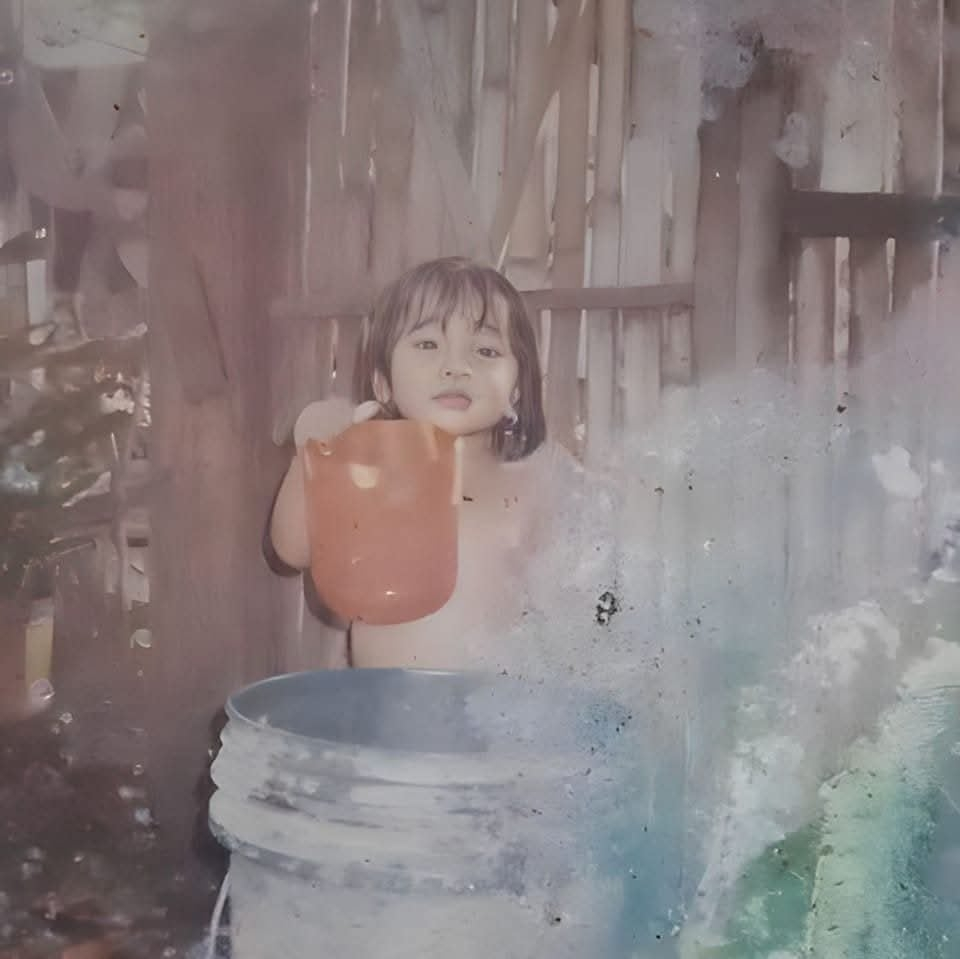
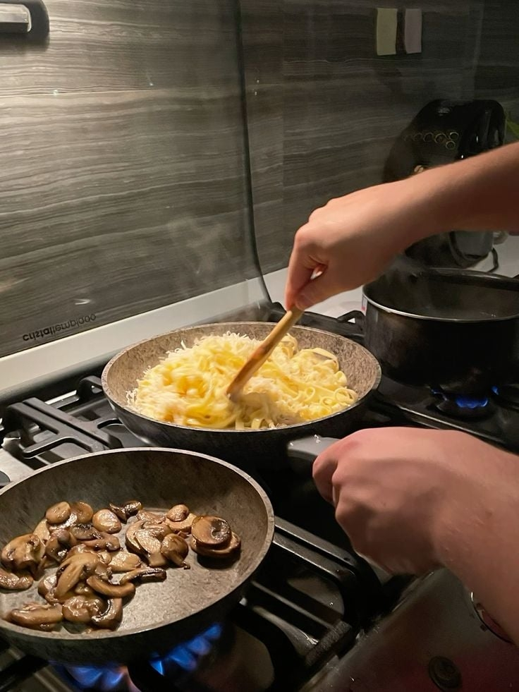
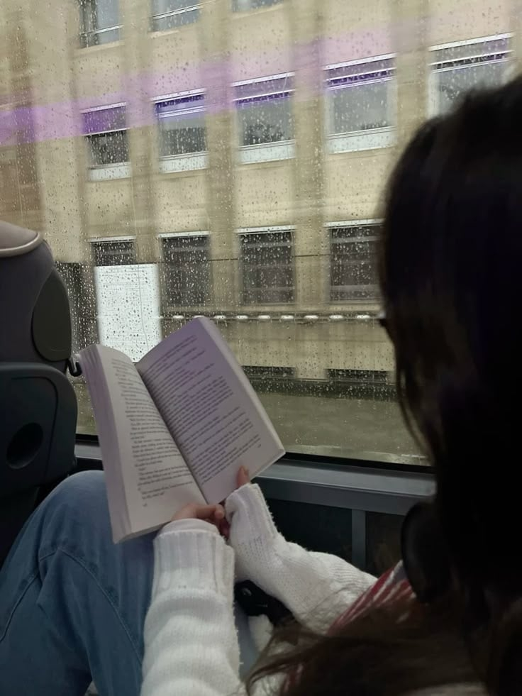

Yes, that describes me as a child who knew nothing but playing. A child who likes playing with other children in the morning and who, if no one finds her, never returns. A child who is loved and treasured by all. That was me as a child, enjoying every moment without worrying about the future. But by the time she reached adulthood, everything had changed.
October 05, 2004 at Pajac Lapu-Lapu City. The day and the place I was born. I grew up in Sitio Balanghoy, Humay-Humay Gun-ob Lapu-Lapu City. We're I discover that I can do the things that adults do (household chores), and that's when my life starts.
Age: 21 years Old
Date of Birth: October 05, 2004
Birth of Date: Pajac Lapu-Lapu City
Martial Status: Single
Height: 5'0
Weight: 48 kls
Citizenship: Filipino
Elementary Education:
• 2011-2017: Elementary Diploma
• Pajo Elementary School
High School & Senior High School Education:
• 2020-2023: High School & Senior High School Diploma
• Pajo National High School
Singing
Cooking
Reading
My story is far from over. With every new experience, I add pages to this ever-evolving autobiography. What's next? Only time – and a bit of courage – will tell. The end? Not quite – to be continued...